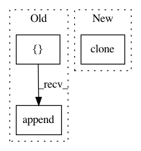

5afc43254eb6d03b3b0ff75bc0ab9a2be621c147,tslearn/nonmyopic.py,NonMyopicEarlyClassification,fit,#NonMyopicEarlyClassification#Any#Any#,96
Before Change
classes_y = np.unique(Y)
self.cluster_ = TimeSeriesKMeans(n_clusters=self.n_clusters)
self.classifier_ = []
self.clusters_ = {}
self.pyhatyck_ = {}
self.indice_ck_ = []
self.__n_classes_ = len(classes_y)
self.__len_X_ = X.shape[1]
c_k = self.cluster_.fit_predict((to_time_series_dataset(X)))
mid_X = int(X.shape[0] / 2)
X1 = X[:mid_X]
Y1 = Y[:mid_X]
X2 = X[mid_X:]
Y2 = Y[mid_X:]
c_k2 = c_k[mid_X:]
vector_of_ones = np.ones((len(X[:]),))
self.pyck_ = coo_matrix((vector_of_ones, (Y, c_k)), shape=(self.__n_classes_, self.n_clusters)).toarray()
for k in range(0, self.n_clusters):
self.clusters_["ck_cm{0}".format(k)] = []
self.pyhatyck_["pyhatycks{0}".format(k)] = []
self.indice_ck_.append(np.where(c_k == k))
current_sum = self.pyck_[:, k].sum()
for current_classe in range(0, self.__n_classes_):
self.pyck_[current_classe, k] = self.pyck_[current_classe, k] / current_sum
for t in range(self.minimum_time_stamp, X.shape[1] + 1):
self.classifier_.append(
self.classifier(
solver=self.solver,
hidden_layer_sizes=self.hidden_layer_sizes,
random_state=self.random_state,
max_iter=self.maximum_iteration,
)
)
self.classifier_[-1].fit(X1[:, :t], Y1)
for k in range(0, self.n_clusters):
index_cluster = np.where(c_k2 == k)
if len(index_cluster[0]) != 0:
After Change
classes_y = np.unique(Y)
self.cluster_ = TimeSeriesKMeans(n_clusters=self.n_clusters)
self.classifiers_ = {t: clone(self.base_classifier)
for t in range(self.minimum_time_stamp,
X.shape[1] + 1)}
self.clusters_ = {}
self.pyhatyck_ = {}
In pattern: SUPERPATTERN
Frequency: 3
Non-data size: 3
Instances
Project Name: rtavenar/tslearn
Commit Name: 5afc43254eb6d03b3b0ff75bc0ab9a2be621c147
Time: 2020-04-08
Author: romain.tavenard@univ-rennes2.fr
File Name: tslearn/nonmyopic.py
Class Name: NonMyopicEarlyClassification
Method Name: fit
Project Name: elbayadm/attn2d
Commit Name: 8ce2c35d8e2dfb2b6dd220058710f81df5eb5729
Time: 2019-05-24
Author: yqw@fb.com
File Name: scripts/average_checkpoints.py
Class Name:
Method Name: average_checkpoints